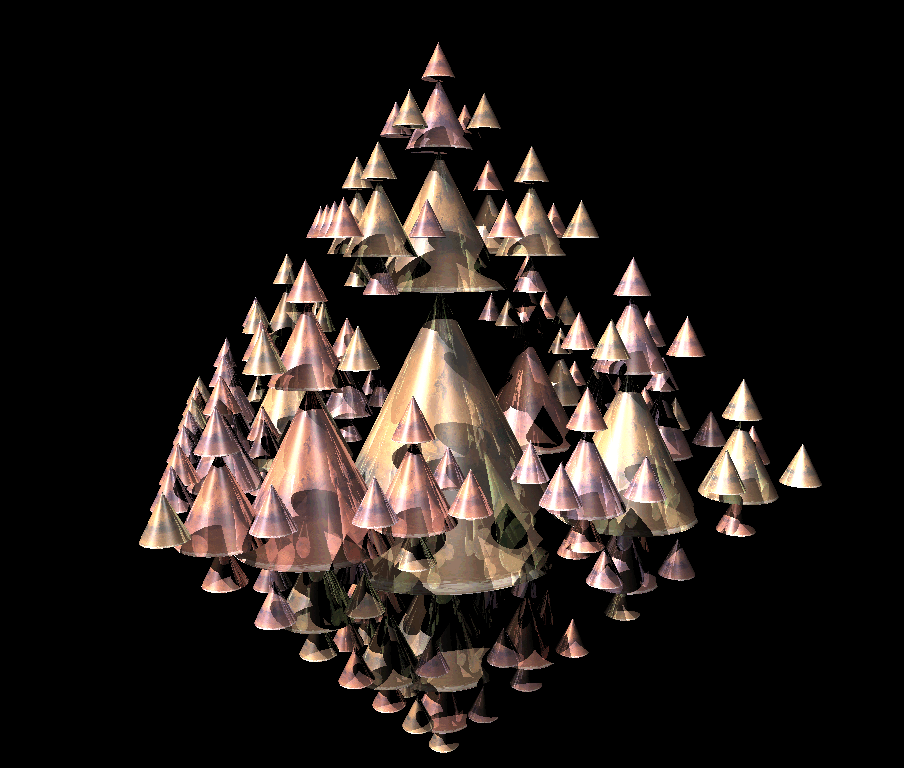
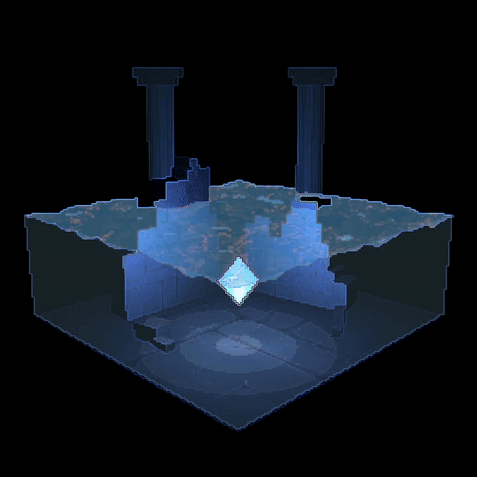
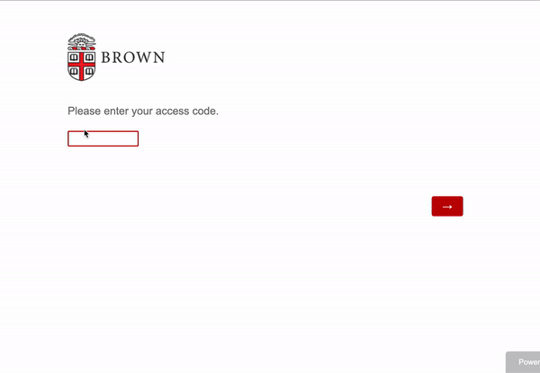

Coding Projects
The following are coding projects I have worked on for my courses at Brown University,
summer work, or personal projects.
Languages Used:
- C++
- Java
- Python
- Javascript/jQuery & HTML/CSS

Raytracing is a method of rendering that simulates the physical pathway of light, allowing for extremely realistic lighting effects during the first render pass. In this project, I utilized the Phong Illumination Model in order to calculate lighting effects, as well as recursive raytracing to compute both shadowed (one pass) and reflective surfaces (several passes). Finally, I implemented UV coordinate mapping in order to render each surface under texture maps specific to each shape, taking into account color blending and lighting effects overlaid on top of textures.
raytracing
Raytracing is a method of rendering that simulates the physical pathway of light, allowing for extremely realistic lighting effects during the first render pass. In this project, I utilized the Phong Illumination Model in order to calculate lighting effects, as well as recursive raytracing to compute both shadowed (one pass) and reflective surfaces (several passes). Finally, I implemented UV coordinate mapping in order to render each surface under texture maps specific to each shape, taking into account color blending and lighting effects overlaid on top of textures.

A real-time underwater scene which features height mapping, scrolling textures and displacement mapping, pixelation and outline shaders, rotating shapes, transparency, and texture mapping using GLSL shaders.
During this project, we wanted to focus on exploring different post-processing techniques made possible with the OpenGL library and GLSL shaders. Pixelation with outline filtering was accomplished through two post-processing passes to our initial rendered scene, in which two shaders and two framebuffer objects (FBOs) sampled from the texture output of the other in order to render our final product. Additionally, inspired by Evan Wallace’s work with realistic water movement, we implemented displacement mapping and height mapping to achieve scrolling water with height variation on a 3d plane.
diamond in the sea
A real-time underwater scene which features height mapping, scrolling textures and displacement mapping, pixelation and outline shaders, rotating shapes, transparency, and texture mapping using GLSL shaders.
During this project, we wanted to focus on exploring different post-processing techniques made possible with the OpenGL library and GLSL shaders. Pixelation with outline filtering was accomplished through two post-processing passes to our initial rendered scene, in which two shaders and two framebuffer objects (FBOs) sampled from the texture output of the other in order to render our final product. Additionally, inspired by Evan Wallace’s work with realistic water movement, we implemented displacement mapping and height mapping to achieve scrolling water with height variation on a 3d plane.

real-time graphics
Similar to Raytracing, the real-time graphics pipeline renders 3D scenes with realistic lighting. However, while the realistic quality of rendered images is decreased due to the lack of precision that raytracing allows, real-time rendering is more time-efficient and allows for camera manipulation and movement. In addition, the tesselation of each shape type can be adjusted according to a GUI slider in real-time. This application makes use of OpenGL API and the real-time graphics pipeline, as well as multiple post-processing effects using framebuffer objects and custom shaders.
canvas 2d
A Painting and filtering application that features multiple types of brushes, allowing users to paint on a 2D canvas with RGBA values, as well as apply filters on their painting or imported images.

Integrated Javascript with Qualtrics API in order to protect the session privacy of high school students and hide sensitive data during a district-wide survey. Students were each provided with unique access codes registered with the administration system, and could only log into the survey via their access code. If students went idle (no mouse movement, clicks, or scrolling either on desktop or mobile), a pause screen displayed while the rest of the survey locked, preventing other students or passing individuals from being able to see student answers. In order to resume the survey, students must provide the same access code they began the survey with. Otherwise, after 10 minutes, the student was logged out completely and brought back to the survey home page.
This idle and pause screen was use in several student-facing surveys in multiple school districts by the Brown School of Public Health’s Survey Research Center.
session privacy
Integrated Javascript with Qualtrics API in order to protect the session privacy of high school students and hide sensitive data during a district-wide survey. Students were each provided with unique access codes registered with the administration system, and could only log into the survey via their access code. If students went idle (no mouse movement, clicks, or scrolling either on desktop or mobile), a pause screen displayed while the rest of the survey locked, preventing other students or passing individuals from being able to see student answers. In order to resume the survey, students must provide the same access code they began the survey with. Otherwise, after 10 minutes, the student was logged out completely and brought back to the survey home page.
This idle and pause screen was use in several student-facing surveys in multiple school districts by the Brown School of Public Health’s Survey Research Center.
search
Programmed a terminal-based search engine returning relevant results from user-inputted query. Parsed various sizes of XML-formatted Wikipedia articles and utilized REPL to prompt user interaction
sketchy
A simplified version of Microsoft Paint using Java and extensive JavaFX packages. Features shape creation and selection using mouse, button, and keyboard interaction. Additionally features mouse interaction to enable line drawing and shape manipulation. Enables save/load function of drawing files